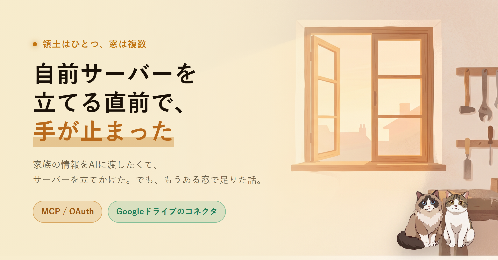

身内の基本情報をまとめた小さな CSV を、どの端末の AI からも参照したかった。たったそれだけの目的だったのに、気がついたら認証ファサードと冗長化の設計図を描いていた。手が止まったのは、もう既製のコネクタが手の中にあると思い出した瞬間だった。
やりたかったことを書き出すと、一行で済む話だった。身内の基本情報をまとめた小さな CSV を、Claude でも ChatGPT でも Codex でも、どの端末の AI からも参照できるようにしたい。それだけ。
最初に思いついたのは、読み取り専用の小さな窓口を自前で立てる案だった。正本データは Google ドライブに置き、その窓口がドライブを読みに行く。絵としては綺麗に見えていた。
外から安全に繋ぐには認証が要る。仕様を読み込むほど、OAuth 2.1、PKCE、動的クライアント登録、と項目が増えていった。AI クライアントごとに受け付ける認証方式が違うので、静的なトークンで済む相手とそうでない相手で分岐する設計になる。
そこに「せっかくだから」が乗った。VPS に立てる版と、自宅 PC に立てて Tailscale で外に出す版。コアは共通、デプロイだけ 2 通り。同期は両方常時動かして、外に開く扉は普段 1 枚だけにして、片方が落ちたらもう片方を開ける。
冗長化、フェイルオーバー、運用手順。設計だけで小一時間。実装は一行も書いていない。
メモを眺めていて、ひとつ引っかかった。正本は Google ドライブに置くと最初から決めていた。そして、自分が使っている AI には、もう Google ドライブのコネクタがある。スマホの Claude には、別件で前に繋いだやつが、もう生きている。
…自前のサーバー、要らないのでは。
正直、笑ってしまった。やりたいのは「Google ドライブに置いたファイルを AI に読ませる」だけ。それをやる道具は、もう手の中にあった。自分はその真横に、わざわざもう一枚、自前の窓を建てようとしていた。
身内向けの CSV を Google ドライブの一角に移して、スマホの AI に「これを読んで」と頼んだら、普通に読めた。中身を要約させても、ちゃんと身内の情報として返ってきた。
OAuth も、VPS も、Tailscale も、認証ファサードも、一行も書いていない。立てるつもりだったサーバーは、一台も立っていない。それで目的は達成だった。
あとから言葉にすると、こういうことだったと思う。正本（領土）は 1 か所に決める。ここでは Google ドライブ。そこに、各 AI（窓）がそれぞれの口で覗きに来る。Claude の窓、ChatGPT の窓、Codex の窓。窓は付け替えられるし、増やしても領土は 1 つのまま散らからない。
自分が作ろうとしていたのは、すでに開いている窓のすぐ隣に、もう一枚そっくりな窓を自作する作業だった。領土が増えるわけでも、見えるものが増えるわけでもないのに。
今回つかんだのは、こういう小さなことだ。
とはいえ、自前の窓口を書いている時間そのものは、普通に面白かった。認証まわりを読むのも、嫌いじゃない。
なので、書きかけのサーバーは消さず「学習用」として別の棚に移した。実用は既製のコネクタ、勉強は自前、と分けた。こうしておくと、作りたい欲も満たせるし、目的の達成は最短で済む。
何か作りたくなったとき、まず「もう誰かが作ってないか」を一度だけ確認する。たったそれだけのことだけど、今回はそれで一晩ぶんの作業が消えた。小さく、これを習慣にしていく。